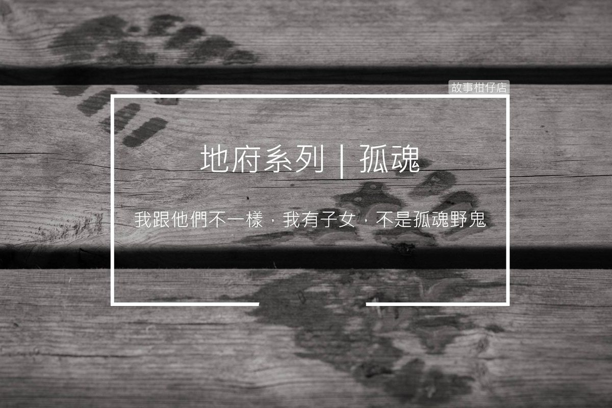

孤魂

剪溜：祢好，請問祢負責什麼工作？
牛頭將軍：我跟馬面少數能去透透氣的機會，就是帶頭七的亡魂回家一趟，通常這還不錯，家屬都會準備很多好吃的。
〈孤魂〉
一輪明月高掛夜空，月光微微照亮了街道，牛頭與馬面將軍領著一個老翁緩緩前行。
「這麼晚了，怎麼路上還這麼多人？」理當靜謐的社區，今夜竟熱鬧如街市，許多面色慘白、雙頰凹陷的人影來回穿梭，讓老翁百思不得其解。
馬面沒好氣答：「什麼人，跟你一樣都是鬼！」
老翁帶著歉意笑道，「不好意思，我重聽，你剛才說什麼？」
「鬼門開，孤魂野鬼都放出來吃拜拜啦！」牛頭趕緊提高音量打圓場。
「原來如此。」老翁點點頭，隨即慎重向馬面解釋，「我跟他們不一樣，我有子女，不是孤魂野鬼。」
在有一搭沒一搭的閒談中，一行人終於順利抵達一棟氣派的透天厝，牛頭率先從廚房鑽了進去。
「家裡走走看看，時辰到立刻離開。」牛頭叮嚀道，老翁點點頭，逕自走了出去。
寬敞廚房裡，大理石餐桌上擺著一鍋白飯跟幾顆鴨蛋，馬面皺眉哼道：「太誇張了吧！頭七這樣拜？」
牛頭無奈坐下，才剛拿起筷子，突然聽見緊閉房門傳來一陣竊竊私語：
「喂，我先警告你喔，出殯之後，你爸的神主牌可別放在我們家。」
「我也不想，之後再叫我哥處理。」
「哼！昨天大嫂才說他們家沒位置放。我們家就有地方放？」
馬面夾了顆鴨蛋放到牛頭碗裡，說：「吃吧。這種事還嫌少嗎？」
老翁一臉不捨，在家裡晃晃悠悠，顯然沒聽見那番對話。
時辰已到，馬面剔著牙聲聲催促，臨走前，老翁回望著滿布鮮花的靈堂，安慰微笑道：「將軍，你們看，我子女多有心，讓我最後一程走得風風光光。」
但他的臉隨即暗了下來，喃喃低語：「我兒子說，鬼月不適合開刀，誰知道我這條老命就這麼沒了。我擔心，害他內疚一輩子啊……」
月光依舊淒清，街巷仍有許多無人祭祀的孤魂野鬼來回穿梭。領著老翁的牛頭打了個嗝，一肚子的鹹鴨蛋，渴得他只想喝杯水。
天靈靈、地靈靈、妖魔鬼怪都裝瓶！
鬼怪酸甘甜，都在故事柑仔店～
★ 更多的牛頭馬面